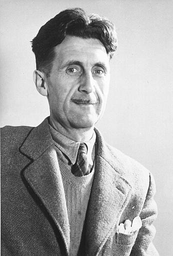

Osman Balcıgil Osman Balcıgil Kimdir?1955’te İstanbul’da doğdu. Ekonomi eğitimi gördü. Ulusal dergi, gazete ve televizyonların haber bölümlerinde muhabir, editör, yönetici olarak otuz yıla yakın çalıştı. Pek çok ödül aldı. Latin Amerika’da yaptığı çalışmayla, 1988 yılında Türkiye Gazeteciler Cemiyeti tarafından “Yılın Gazetecisi” seçildi. Sürekli Basın Kartı sahibi. Birçok çalışmaları ve romanları mevcuttur... |
Ahmet Ümit Ahmet Ümit Kimdir?Ahmet Ümit,1960’ta Gaziantep’te doğdu.1983’te Marmara Üniversitesi Kamu Yönetimi Bölümü’nü bitirdi.1985-1986 yıllarında, Moskova’da, Sosyal Bilimler Akademisi’nde siyaset eğitimi gördü.Şiirleri, 1989 yılında 'Sokağın Zulası' adıyla yayımlandı. 1992’de ilk öykü kitabı 'Çıplak Ayaklıydı Gece' yayımlandı.Hem çocuklara hem büyüklere yönelik 'Masal Masal İçinde' ve 'Olmayan Ülke' kitapları ile farklı bir tarz denedi.1996’da yazdığı ilk romanı 'Sis ve Gece', polisiye edebiyatta bir başyapıt olarak değerlendirildi.Bu romanın ardından 'Kar Kokusu', 'Patasana' ve 'Kukla' yayımlandı.Bu kitapları 'Ninatta’nın Bileziği', 'İnsan Ruhunun Haritası', 'Aşk Köpekliktir', 'Beyoğlu Rapsodisi', 'Kavim', 'Bab-ı Esrar', 'İstanbul Hatırası', 'Sultanı Öldürmek', 'Beyoğlu’nun En Güzel Abisi', 'Elveda Güzel Vatanım' ve 'Kırlangıç Çığlığı' adlı kitapları izledi.Ahmet Ümit’in, İsmail Gülgeç’le birlikte hazırladığı 'Başkomser Nevzat-Çiçekçinin Ölümü' ve 'Başkomser Nevzat-Tapınak Fahişeleri','Aptülika' ile birlikte hazırladığı 'Başkomser Nevzat-Davulcu Davut’u Kim Öldürdü?' ve Bartu Bölükbaşı ile birlikte hazırladığı 'Elveda Güzel Vatanım-İttihatçıların Yükselişi' adlı çizgi romanları da bulunmaktadır.Yayınlanmış 26 eseri bulunan Ahmet Ümit’in seksene yakın kitabı 26 yabancı dilde yayınlandı. |
Akilah Azra Kohen Akilah Azra Kohen Kimdir?Yazar Azra Kohen (Özge Azra Sarızeybek Kohen) 1979 yılında İzmir’de doğmuştur. İstanbul Üniversitesi Radyo Televizyon Sinema bölümünden mezun olduktan sonra Kanada’da Ottowa Üniversitesi’nde Üçüncü Dünya Ülkelerine Yardım Ekonomisi bölümünde eğitim almış, daha sonra Liverpool Üniversitesi Uygulamalı Psikoloji bölümünde yüksek lisansını tamamlamıştır. İyi derecede İngilizce ve İtalyanca konuşan Azra Kohen evli ve bir çocuk annesidir. Ülkemizde yayınlanan Fİ-Çİ-Pİ isimli üçlemesi ve AEDEN ve GÖR BENİ isimli eserlerin yazarıdır. Üçleme kitapları dizi olarak işlenmiş ve Fİ ve Çİ adı altında izleyici ile buluşmuştur |
Oğuz Atay Oğuz Atay Kimdir?Roman ve öykü yazarı olmasının yanında bir mühendis ve tiyatro oyunu yazarı olan Oğuz Atayı’ın ilk ve en ünlü romanı ülkemizde çok satan ve okunan Tutunamayanlar, 1972’de yayımlandı ve eleştirmenler arasında büyük tartışmaya neden oldu. Tutunamayanlar, UNESCO tarafından 20. Yüzyıl Türk Edebiyatı’nın en seçkin eseri olarak kabul edilir. Eser, Flemenkçeye, Almancaya ve The Disconnected adı altında İngilizceye çevrilmiştir.Oğuz Atay, kitaplarında düşü ve gerçekliği harmanlar ve üstkurmaca adı verilen kurgu türünü kullanan ilk yazarlardan biri olarak kabul görür. Oğuz Atay, bu anlamda postmodernist bir yazardır. Beyin tümörü nedeniyle hayata gözlerini yuman büyük yazarımızın Günlük ve Eylembilim kitapları 1987’de ve 1998’de yayımlanmıştır. Yıldız Ecevit, 2014 yılında yayımlanan ve İletişim Yayınları tarafından basılan “Ben Buradayım” adlı eseriyle Oğuz Atay’ın hayatını anlatmıştır. |
Michelle Hodkin Michelle Hodkin Kimdir?Michelle Hodkin, 31 Mart 1982 yılında Amerika'da dünyaya gelmiştir. Güney Florida'da büyüyen yazar üniversite eğitimini New York Üniversitesinde derece ile tamamlamıştır. Akademik kariyer peşinde koşan Michelle Hodkin, 23 yaşında Hukuk eğitimini tamamlamıştır. İlk romanını yayımlamadan önce avukat olarak çalışmıştır. İlk romanını 2011 yılında yayımlayan Michelle Hodkin'in romanları New York Times Bestseller arasında yer almıştır. Michelle Hodkin, aynı zamanda Türkiye'de çok satanlar listesinde yer alan özgün adı Mara Dyer Trilogy olarak bilinen Mara Dyer Üçlemesinin yazarıdır. |
Aret Vartanyan Aret Vartanyan Kimdir?İstanbul'da, mütevazi bir ailenin tek çocuğu olarak dünyaya gelen Aret Vartanyan, küçük yaşlarda yazmaya başladı. Ermeni, Rum, Müslüman, Musevi, Hristiyan, Alevi üyeleri ile küçük yaşta çokkültürlülüğü deneyimleyen Vartanyan, ilkokul sıralarında yazdığı kısa hikayeleri zımbalayarak çevresiyle paylaşır. Ortaokul sıralarında felsefe, psikoloji ve sosyoloji ile ilgilenmeye başlar ve sonrasında insanı, varoluşunu ve yaşamı irdelemeyi, kendi yaşam yolculuğunun odağına taşır. Üniversite yıllarında, birçok yerel/ulusal yayınlarda yazıları yayınlanmaya başlayan Aret Vartanyan, 1998 yılında internet sitesini kurarak yazdıklarını geniş kitlelerle paylaşır. Ailesinde,İstanbul'da ve özellikle Beyoğlu sokaklarında insana ve yaşama dair gözlemlerini kalemine ustalıkla yansıtan Aret Vartanyan, 2008 yılında ilk kitabı Sen ve Ben ile kısa zamanda onbinlerce okura ulaştı.Marmara Üniversitesi İletişim Fakültesi'nde lisans ve yüksek lisansını tamamlayan Vartanyan, İngiltere'de Oxford ve Londra'da eğitimini sürdürdüğü sıralarda Kişisel Gelişim kavramına odaklandı. Kişisel Gelişim çalışmalarında insanın iç dünyasına verilmesi gereken önemin verilmediğine inanan Vartanyan, Kişisel Dönüşüm yaklaşımı üzerinde çalışmalarını yoğunlaştırdı. 'Ben gerçekleştiğini fiziksel ömrümde göremeyeceğim bir ütopyaya yürüyorum. Tek bir kişiyi bile dışarıda bırakmadan insanın hakettiği yaşamı ve hayallerinin gerçekliğini sunan, sevgi üzerine kurulmuş, bireyin kendi olarak, kendini ifade ederek yaşadığı ve paylaştığı bir dünyayı yaratmak için paylaşıyorum.' |
George OrwellGeorge Orwell Kimdir?ngiliz bir memurun çocuğu olan George Orwell 25 Haziran 1903 tarihinde Hindistan’da doğmuştur George Orwell ismiyle tanıdığımız yazarın gerçek adı Eric Arthur Blair’dir. Kız kardeşinin doğumundan sonra annesi ile İngiltere’ye dönen yazar, babasını Hindistan’da bırakmıştır ve onu ara sıra ziyaret etmiştir. Babasıyla arasında pek fazla bir bağ olmamıştır ve yazar baba - oğul sevgisini tadamamıştır. Bu yüzden babasını soğuk ve muhafazakar bulmaktadır.Orwell, en çok bilinen iki distopik romanıyla tanınmaktadır: “1984” ve “Hayvan Çiftliği”... Orwell, Hayvan Çiftliği’nde Sovyetler Birliği’ni ve diğer totariter rejimleri alegorilerle eleştirmiştir. Yazar, 1984’ü yazarken ilk distopik roman örneği olan Rus yazar Yevgeni Zamyatin’in “Biz” adlı kitabından ilham almıştır. Hayvan Çiftliği kitabı yazara büyük beğeni ve maddi imkân sağlamıştır. Bir diğer eseri olan 1984 isimli kitabı yazar için daha büyük bir başarı getirmiştir; fakat yazar, tüberkülozun son evrelerinde olduğu için bu başarısının tadını çıkartamamıştır ve 1950 yılında hayata gözlerini yummuştur. |